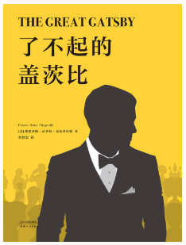
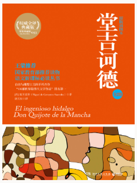
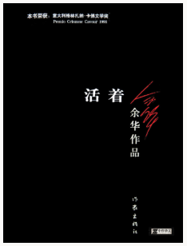

书籍推荐
了不起的盖茨比

我们喜爱《了不起的盖茨比》，只因它是菲茨杰拉德的《了不起的盖茨比》。
一部世界文学史上的“完美之书”，让村上春树、海明威、塞林格等众文豪疯狂迷恋
爵士时代最后的悲曲，爱与灵魂的破碎
20世纪20年代的美国，空气里弥漫着欢歌与纵饮的气息。
一次偶然的机会，穷职员尼克闯入了挥金如土的大富翁盖茨比隐秘的世界。他惊讶地发现，盖茨比内心惟一的牵绊竟是河对岸那盏小小的绿灯——灯影婆娑中，住着心爱的旧情人黛熙。
盖茨比曾因贫穷而失去了黛熙，为了找回爱情，他不择一切手段成为有钱人，建起豪宅，只是想让昔日情人来小坐片刻。然而，冰冷的现实容不下缥缈的梦，真正的悲剧却在此时悄悄启幕……
一个简单的故事，却有着极悲凉的人生况味。
菲茨杰拉德生前惊艳全世界之作，莱昂纳多倾情演绎！
堂吉诃德

反抗十七世纪的西班牙统治思想！
讽刺大英雄主义！
警醒西班牙人民命运的伟大作品！
曼卡的小乡绅堂吉诃德阅读骑士小说入迷，他拼凑了一副盔甲，骑上一匹瘦马，企图仿效古老的游侠骑士生活。
首次出游，受伤而归。
第二次找了邻居桑丘作为侍从，干了许多荒唐事，被人救护回家。
第三次出游，经历了一系列惊险的遭遇，受到公爵夫人的捉弄，等等。
最后，堂吉诃德被扮成骑士的邻居参孙打败，临终时恍然大悟，痛斥骑士小说。
活着

一部充满血泪的小说
跨越内战、三反五反，大跃进，文化大革命等社会变革
乱世之中，一个小人物的辛酸命运
福贵本是个阔少爷，可他嗜赌如命，终于赌光了家业，一贫如洗。
他的父亲被他活活气死，母亲则在穷困中患了重病，福贵前去求药，却在途中被国民党抓去当壮丁。
经过几番波折回到家里，才知道母亲早已去世，妻子家珍含辛茹苦地养大两个儿女。
此后更加悲惨的命运一次又一次降临到福贵身上，他的妻子、儿女和孙子相继死去，最后只剩福贵和一头老牛相依为命，但老人依旧活着。
余华通过一位中国农民的苦难生活讲述了人如何去承受巨大的苦难；讲述了眼泪的丰富和宽广；讲述了绝望的不存在：讲述了人是为了活着本身而活着……